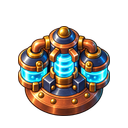
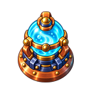

概念方向已认可 · 新切图已接入候选 · 运行效果待试玩确认
冷凝塔：让升级看得见
一级保留。二级变宽、三级变圆，靠主轮廓和核心结构区分，不靠小级标。
 Lv.1 单芯线圈现有风格基准
Lv.1 单芯线圈现有风格基准
 Lv.2 双罐增压宽肩 · 双侧罐
Lv.2 双罐增压宽肩 · 双侧罐
 Lv.3 球形反应室圆冠 · 整块青蓝核心
Lv.3 球形反应室圆冠 · 整块青蓝核心
已接入的配准切图
下方是生产结构图，统一128透明画布和底座基线；青蓝能量覆盖独立于静态结构。上方保留获批原稿，不用运行截图代替设计稿。

Lv.2 生产切图

Lv.3 生产切图
实际尺寸阅读检查
按钮表示游戏画面高度，不放大塔来掩盖辨识问题。设计板仍是静态预览，不是运行截图。
加载尺寸说明…
小尺寸二、三级使用已配准的生产结构图；一级保留原稿参考。完整锚点、切图和实测边界见接入说明。
保留铜铆钉、深蓝外壳、青蓝冰芯、左上暖光和单格占地。
改变二级增加大侧罐；三级替换为球形主室，静止时也能区分。
已接入结构/能量覆盖分层，发射点按各级冰芯质心配准。候选运行效果待你确认。
正在读取设计资产…